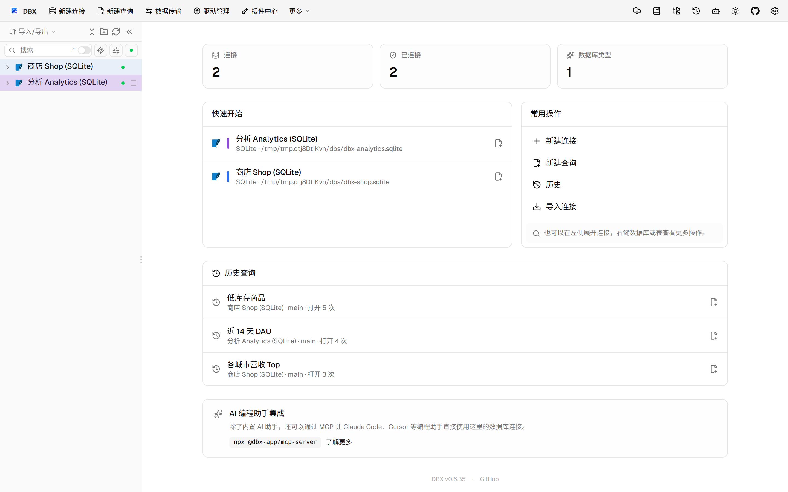
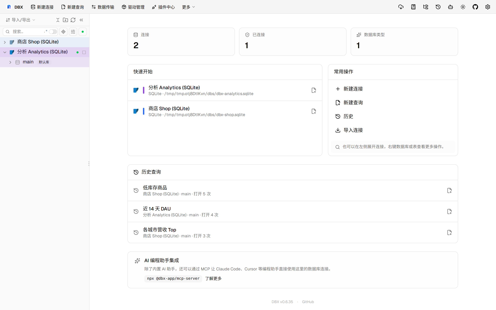

#11513 界面预览
commit 60696b1 · 回到 PR · 这个 PR 给 PostgreSQL 用户自定义类型增加了可视化管理能力：在对象浏览器里可新建、编辑、删除类型，并支持草稿、预览 SQL、删除确认和会话保留。它还把对象面板的缓存改成可保留未完成修改的 KeepAlive，避免切换标签时丢失编辑状态。
⚠️ 这次录制有 12 步没能按计划执行；带 ⚠️ 的截图拍摄于步骤失败之后，画面未必是说明文字所描述的状态。
红线是鼠标走过的轨迹，红色圆环是一次点击；底部文字是这一步在做什么。多个场景各自从应用初始状态开始。空格暂停，← → 逐段查看。
 ⚠️ 类型面板的新建与编辑入口 · 查看类型列表入口位置
⚠️ 类型面板的新建与编辑入口 · 查看类型列表入口位置

⚠️ 类型面板的新建与编辑入口 · 查看类型列表中的新建入口
 ⚠️ 类型面板的新建与编辑入口 · 查看类型面板中的编辑与删除入口
⚠️ 类型面板的新建与编辑入口 · 查看类型面板中的编辑与删除入口

⚠️ 打开类型编辑并查看预览 · 查看自定义类型详情面板
 ⚠️ 打开类型编辑并查看预览 · 查看新增的类型编辑表单和 SQL 预览
⚠️ 打开类型编辑并查看预览 · 查看新增的类型编辑表单和 SQL 预览
 ⚠️ 打开类型编辑并查看预览 · 查看修改后重新生成的预览 SQL 与表单状态
⚠️ 打开类型编辑并查看预览 · 查看修改后重新生成的预览 SQL 与表单状态